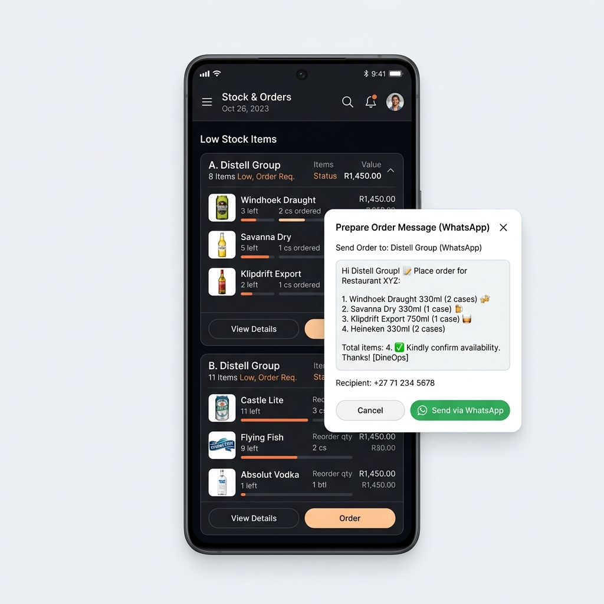
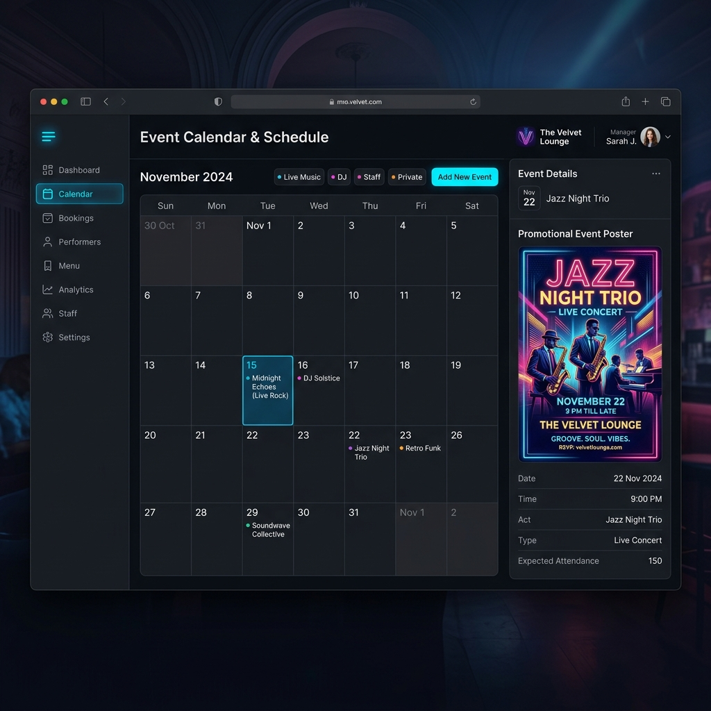
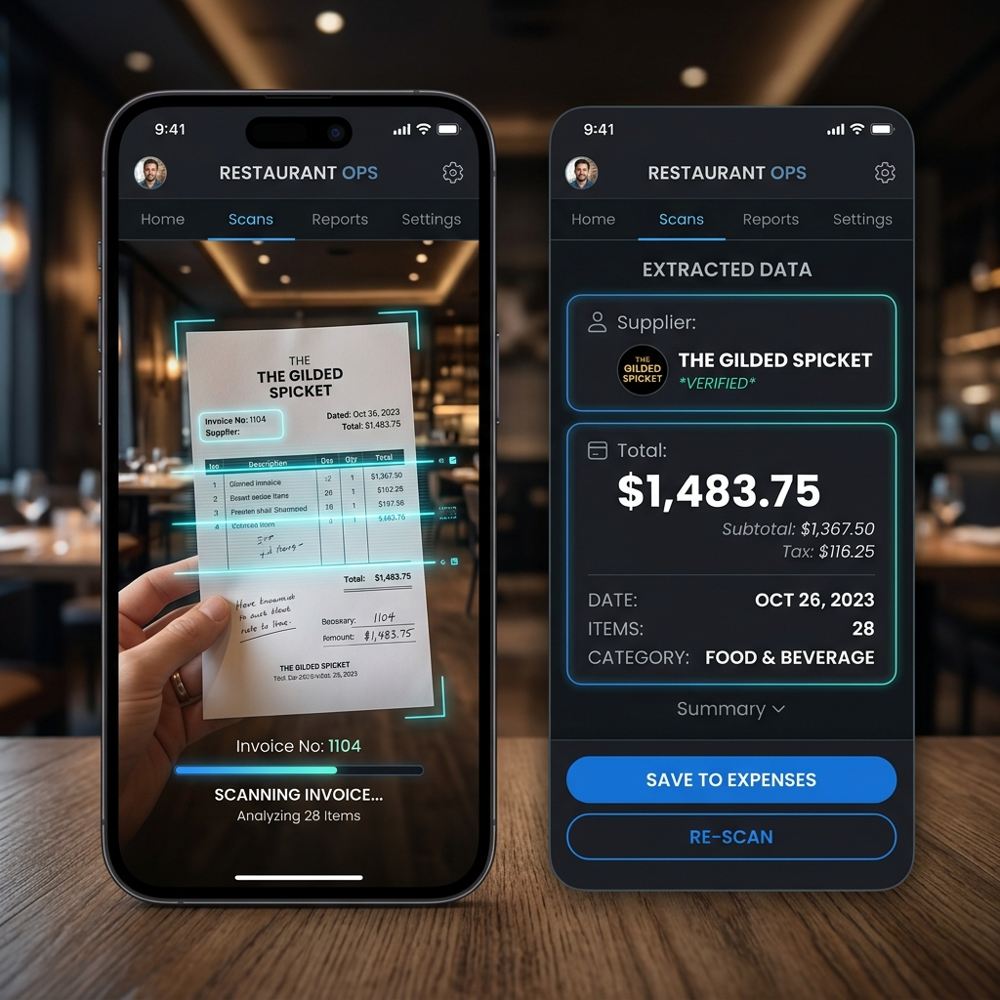

Salguacate ERP
Índice del Manual
Este manual ha sido diseñado para servir como la guía de referencia definitiva de la aplicación **Salguacate ERP**. La guía detalla de forma exhaustiva y paso a paso el funcionamiento completo de todos los módulos del software comercial, convirtiéndose en el recurso de formación idóneo para administradores, encargados y personal de sala y cocina.
💡 Concepción del Producto: Salguacate ERP ha sido concebido para dispositivos táctiles (teléfonos y tablets), simplificando la gestión comercial y automatizando la toma de decisiones mediante Inteligencia Artificial.
1. Introducción al Sistema
Salguacate ERP es una solución integral monolítica de tipo SPA (Single Page Application) diseñada específicamente para la hostelería moderna. El sistema permite conectar de manera transparente los flujos de trabajo de los administradores y del personal, automatizando el aprovisionamiento, los turnos y el control de presencia a través de IA avanzada.
El sistema se despliega de manera local en los establecimientos bajo dos locales estandarizados: "Principal" y "Segundo Local". Su base de datos integrada de SQLite garantiza un rendimiento óptimo y absoluto aislamiento de datos.
2. Acceso Táctil y Clave PIN
La seguridad en un entorno de hostelería compartido exige inicios de sesión veloces sin necesidad de memorizar credenciales complejas o teclear direcciones de correo electrónico. Salguacate ERP implementa un acceso táctil intuitivo en dos pasos:
Selección de Perfil
Al encender la pantalla táctil de acceso rápido, la aplicación carga del backend los perfiles públicos reales de la plantilla con sus roles representados de forma gráfica.
Clave PIN Individual
Cada empleado cuenta con un PIN numérico personal asignado de entre 4 y 8 dígitos que digita sobre un teclado numérico táctil de alta densidad.

3. Dashboards Adaptativos por Rol
Una vez introducido el PIN, el ERP renderiza instantáneamente una interfaz adaptada según el perfil del usuario conectado:
👑 Dashboard Ejecutivo Owner Manager
El dashboard de administración muestra una visión financiera y operativa integral del local seleccionado o de ambos locales:
KPIs de Caja e Ingresos
Muestra el acumulado de ingresos brutos del mes actual, el histórico de cierres de caja realizados y los gastos deducidos de las facturas de proveedores reales.
Presencia en Tiempo Real
Un widget dinámico de presencia viva de la plantilla que muestra quiénes están trabajando (🟢), quiénes están en descanso (🟡) y quiénes están libres o fuera de turno (🔴).

👤 Dashboard Simplificado de Personal Staff
Los camareros y cocineros disponen de una pantalla inicial centrada en su jornada activa para evitar distracciones:
- Tu Turno de Hoy: Muestra el local asignado, las horas exactas de inicio y fin del cuadrante y los compañeros del día. Si el empleado libra, muestra un gran mensaje motivador "¡Hoy libras! 🎉".
- Checklist de Tareas de Hoy: Listado de tareas obligatorias del local programadas para hoy, con marcas de prioridad (baja, normal, alta). Permite tachar las tareas completadas en tiempo real.
4. Registro Horario y Pausas (Fichajes)
El control de horas y cumplimiento de la ley laboral se realiza de forma interactiva en tres marcas atómicas:
-
1
Fichar Entrada: Al llegar al establecimiento, el empleado selecciona su perfil y pulsa "Fichar Entrada". El sistema valida la hora exacta del servidor y actualiza su estado a "Trabajando" (🟢), visible para el dueño.
-
2
Descansos / Pausas: Al salir a su descanso diario, pulsa "Descanso". El ERP pausa el contador de horas y actualiza su color a descanso (🟡). Al regresar, pulsa "Volver" para reanudar la jornada activa.
-
3
Fichar Salida (Finalizar): Al culminar la jornada, pulsa "Finalizar". El sistema calcula las horas de trabajo acumuladas y cierra la jornada, pasando el indicador a fuera de servicio (🔴).
5. Inventario Crítico y Pedidos Directos a WhatsApp
La gestión de stock de bebidas y comida está diseñada bajo un concepto de umbrales críticos de aviso automatizado:

-
1
Catálogo por Local: Cada artículo del inventario está catalogado con su cantidad actual, cantidad mínima y local asignado.
-
2
Cálculo Automático de Alertas: Cuando el stock actual desciende por debajo de su mínimo, el ERP genera una alerta crítica de reposición agrupando los artículos por su proveedor habitual.
-
3
Integración de WhatsApp Web Directa: El sistema extrae de forma automática el número real del proveedor. Al pulsar "Enviar Pedido", abre instantáneamente WhatsApp Web en una pestaña nueva con un mensaje formal pre-redactado detallando la lista completa de artículos requeridos.
6. Agenda de Eventos y Ocio
La agenda integrada del local permite programar pinchadas, conciertos y reuniones del bar, vinculándolos de manera directa con las capacidades de la IA:

- Creación de Eventos: Los administradores pueden programar la fecha, hora, tipo de evento y descripción de los mismos.
- Autogeneración de Cartel Artístico (Imagen 3): En eventos musicales como pinchadas o conciertos, la aplicación muestra el botón premium **"Generar Cartel con IA"**. Al pulsarlo, el backend se conecta con el modelo avanzado **`imagen-3.0-generate-002`** de Google para diseñar de forma instantánea un cartel artístico vertical en base a la descripción, ideal para compartir en Instagram Stories o imprimir.
7. Visión Artificial y Escáner (Gemini 2.5 Flash)
Salguacate ERP incorpora inteligencia de visión avanzada para simplificar tareas mecánicas de conteo y contabilidad:

Extracción de Compras (Facturas)
Sube una foto de un albarán o ticket de compra. El modelo **Gemini 2.5 Flash** procesará la imagen, extraerá de manera exacta la razón social del proveedor, el importe total y un resumen textual. El manager puede guardarlo en contabilidad con un solo clic.
Recuento Visual de Botellas
Sube una foto de las estanterías del almacén. La IA analizará la distribución visual de las botellas, estimando la cantidad actual en stock con un indicador de porcentaje de confianza y una explicación detallada.
8. Contabilidad Diaria y Cierres de Caja
El cuadre de caja diario y la analítica financiera del bar están completamente automatizados mediante interfaces intuitivas y dinámicas:
- Cierres de Caja Diarios: El administrador o encargado del local registra al finalizar la jornada fiscal el dinero físico en efectivo, el cobrado por tarjeta (terminales TPV) y el valor de las consumiciones invitadas. El sistema calcula automáticamente el descuadre de caja (la diferencia contra la caja teórica esperada).
- Módulo de Analíticas Visuales (Recharts): Los cierres y gastos se modelan en gráficas dinámicas de área y barras que representan las ventas semanales/mensuales, evolución de gastos, beneficio neto acumulado y la curva de descuadres, facilitando la toma de decisiones y el análisis de rentabilidad por local.
9. El Asistente Inteligente "Salguabot" 🤖
El canalizador principal de las capacidades cognitivas de la IA en Salguacate ERP es **Salguabot**, disponible en el overlay de chat flotante:
- Contextualización Activa: En cada mensaje, el backend inyecta dinámicamente el estado actual en tiempo real de los locales, el inventario completo del bar y el personal activo. El asistente sabe con precisión qué está pasando en el restaurante.
- Function Calling (Llamada a Funciones): Salguabot puede ejecutar de manera autónoma operaciones SQL locales tras comprender instrucciones en lenguaje natural. Puede crear eventos de agenda, borrar reservas, registrar turnos y actualizar cantidades de stock.
🧠 Ejemplo de Acción: Al dictar por voz a Salguabot "María libra el próximo viernes, cámbiale su turno al local Segundo Local para el sábado por la tarde", la IA identificará a los empleados, los locales, ejecutará la base de datos y refrescará el cuadrante de forma automática sin que tengas que rellenar ningún formulario.
10. Instrucciones para Guardar en PDF 📄
El manual ha sido programado con una hoja de estilos CSS de impresión profesional para que puedas descargarlo o imprimirlo como un libro o folleto físico/digital impecable:
-
1
Pulsa el botón de abajo **"Imprimir / Guardar en PDF"** o presiona la combinación de teclado **Ctrl + P**.
-
2
En el cuadro emergente del navegador, en el campo de "Destino", selecciona la opción **"Guardar como PDF"**.
-
3
Despliega "Más opciones" y asegúrate de marcar la casilla **"Gráficos de fondo"** (Background graphics) para que los mockups, degradados y colores de la guía se conserven con alta definición. Haz clic en Guardar.